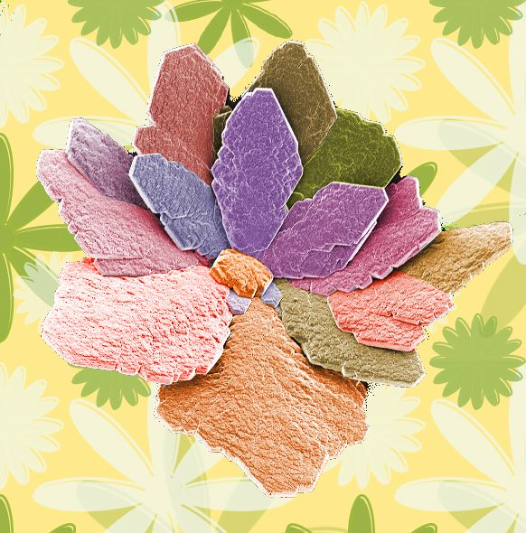

Crystal Detectives
MoSS and CrystoGen are developing hands-on sessions for around 360 Year 4 pupils in Manchester, Leeds and Durham. Pupils will examine crystal shapes, build lattice models and grow salt crystals at home.
Six schools in Manchester, three in Leeds and three in Durham.